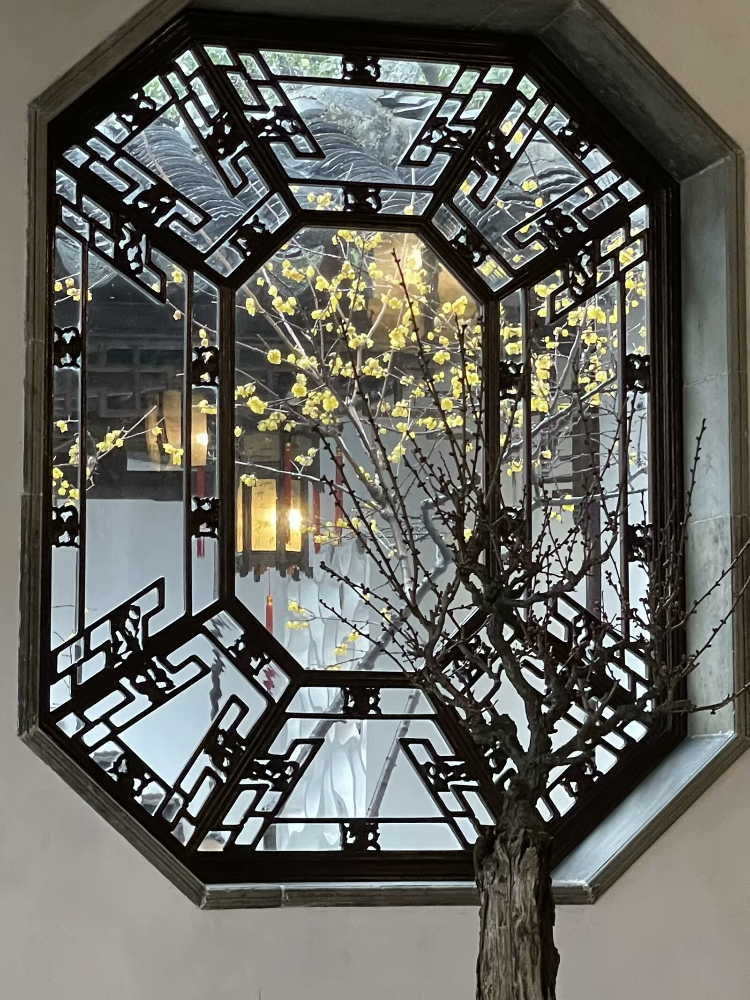

Written by Eliana Li
狮子林里的每一块石头，每一个洞穴，都像是藏着宝藏的秘密地图。假山结构精巧，没有一条死路，任何一个入口都通往未知的领域。除了自然框景，彩窗真的平添了生趣。从堂室到亭台到石舫，窗户设计都各不相同，五彩缤纷，很别致。
爬假山时注意头顶石块，弯弯绕绕别迷路！
Every rock and cave in Lion Grove Garden is a secret map leading to a fantasy filled with treasure and surprise. The subtle structure of the Jiashan (Miniature Mountain) creates a puzzel with every enterance leading to an unknown realm. What's surprising is that no paths has a dead end. Apart from rocky mountains and delicated pathways, the intricate window pattern makes the scene more lively with a burst of color. Down from halls to pavilions to stone boats, each window has a unique design which allows visitors to be astonished by the ambient colorful lights.
When climbing and touring around in Jiashan, make sure to watch out for sharp rocks ahead and don't get lost ;)